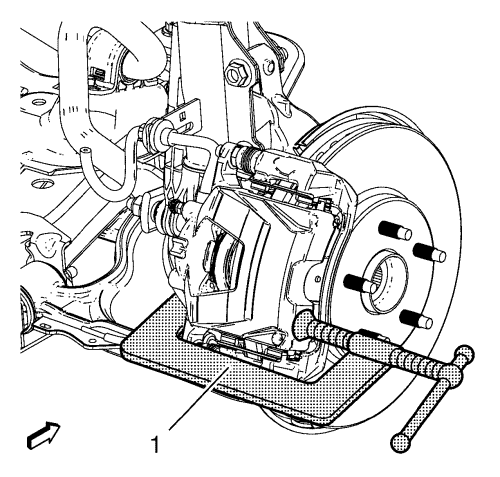
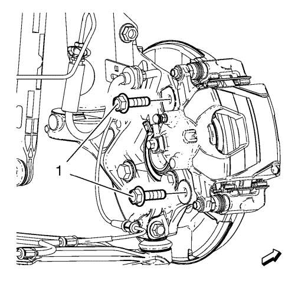
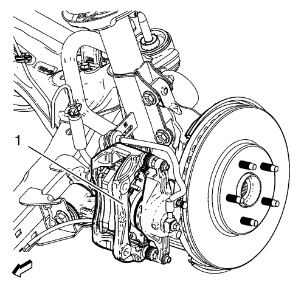
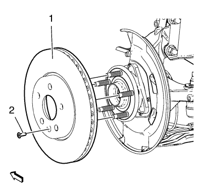
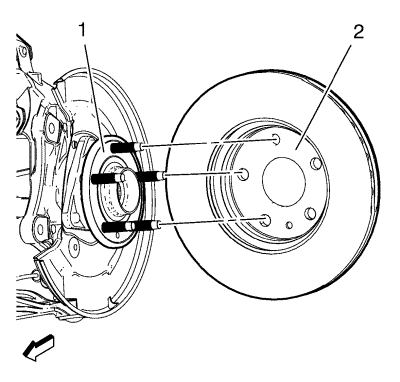

Sustitución del rotor de freno delantero
Herramientas especiales
| • | CH-41013 Juego de repaso del rotor |
| • | CH-42450-A Juego de repaso del cubo de rueda |
Si desea informarse sobre herramientas regionales equivalentes, consultar Herramientas especiales .
Procedimiento de desmontaje
Advertencia: Consulte Advertencia relacionada con el polvo procedente de los frenos en la sección Prólogo

- Elevar el vehículo y soportarlo de manera segura. Consultar Elevación del vehículo con un gato .
- Desmonte la rueda del vehículo. Consultar Desmontaje y montaje de la rueda y el neumático .
- Monte una abrazadera C (1) sobre el cuerpo de la pinza de freno con los extremos de la abrazadera C contra la parte trasera del cuerpo de la pinza y la pastilla de freno de disco exterior.
- Apriete la abrazadera C (1) hasta que el pistón de la pinza esté comprimido en el orificio de la pinza lo suficiente como para permitir que la pinza pase por el rotor de freno.
- Desmonte la abrazadera C (1).

- Desmonte y DESECHE los pernos de soporte de la pinza de freno (1).

Atención: Sujete las pinzas de freno con alambre mecánico fuerte o equivalente cuando se separen del montaje y aún esté conectado el tubo flexible de freno hidráulico. Si no se sujetan las pinzas de esta manera, el tubo flexible de freno tendrá que soportar el peso de las pinzas, lo que puede provocar que se dañe el tubo flexible de freno y esto, a su vez, puede provocar una fuga de líquido de frenos.
Nota: NO desconecte de la pinza el latiguillo del freno hidráulico.
- Desmonte la pinza de freno y el soporte de fijación de la pinza como un conjunto (1) de la mangueta y apoye el conjunto con un cable mecánico resistente, o equivalente. Asegúrese de que no hay tensión en el tubo flexible del freno hidráulico.
- Marque la posición del rotor del freno con relación a los pernos de rueda.

- Desmonte el tornillo del rotor de freno (2).
- Retire el rotor de freno (1) del cubo de la rueda.
Procedimiento de montaje

Nota: Siempre que el rotor de freno se haya separado de la brida de cubo/eje, se deberá limpiar cualquier óxido o contaminantes de la brida de cubo/eje y las superficies de conexión del rotor de freno. Si no se hace, se podrá producir un alabeo montado (LRO) excesivo del rotor de freno que podría provocar pulsaciones en el freno.
- Con la herramienta de repaso CH 42450-A, limpie a fondo cualquier óxido o corrosión de la superficie de conexión o de la brida de cubo/eje (1).
- Utilizando la herramienta de repaso CH 41013, limpie a fondo cualquier óxido o corrosión de la superficie de conexión y de soporte del rotor de freno (2).
- Revise las superficies de conexión de la brida de cubo/eje y el rotor para garantizar que no queden partículas o restos extraños.
- Monte el rotor de freno en la brida de cubo/eje. Utilice la marca realizada antes del desmontaje para asegurar la correcta orientación de la brida.
Precaución: Consulte Precaución con las fijaciones en la sección Prólogo
- Monte el tornillo del rotor de freno y apriete hasta 7 N·m (62 lib. pulg.).
- Si el rotor de freno se desmonta y se instala como parte de una reparación del sistema de frenos, mida el LRO montado del rotor de freno para garantizar un rendimiento óptimo de los discos de freno. Consultar Medición del alabeo montado del rotor de freno .
- Si la medición del LRO montado del rotor de freno excede la especificación, haga que el LRO se encuentre dentro de las especificaciones. Consultar Corrección del alabeo montado del rotor de freno .
- Desmonte el soporte, y monte la pinza de freno y el soporte de la pinza de freno como un conjunto en la mangueta.
- Monte los NUEVOS pernos del soporte de la pinza de freno (1) y apriételos a 100 N·m (74 lib. pie) + 60° + 15°.
- Monte el conjunto de neumático y llanta. Consultar Desmontaje y montaje de la rueda y el neumático .
- Bajar el vehículo.
| © Copyright Chevrolet. All rights reserved |